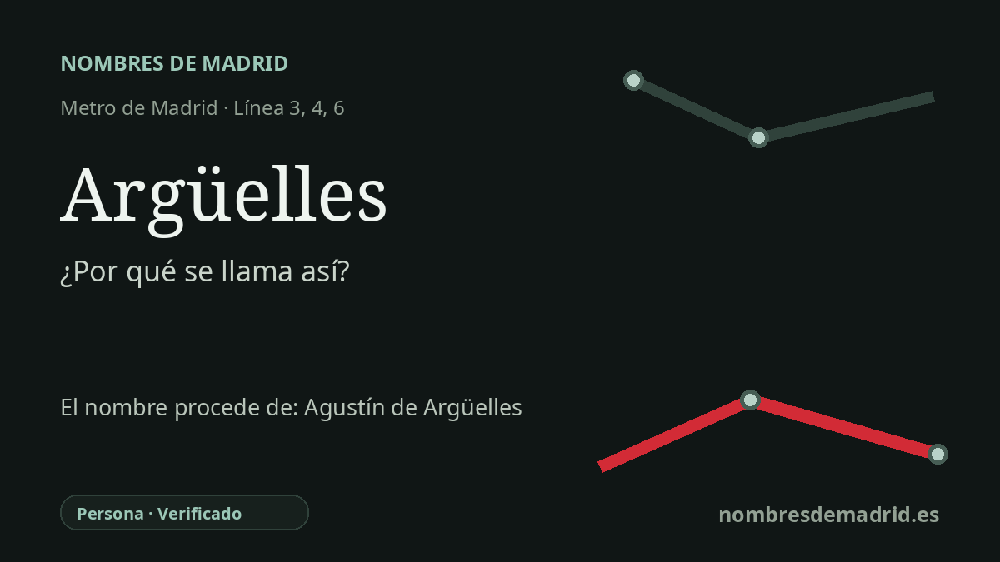

Publicado el · Investigación de Nombres de Madrid · Cómo verificamos cada origen · 6 fuentes consultadas
Respuesta rápida
La estación de Argüelles toma su nombre del barrio madrileño dedicado a Agustín de Argüelles Álvarez, político liberal asturiano y constitucionalista gaditano conocido como “El Divino”. La ficha histórica de Metro de Madrid vincula expresamente el nombre de la estación con él y con el entorno de su estatua.
La historia del nombre
El nombre de la estación Argüelles procede de Agustín de Argüelles Álvarez, político liberal asturiano recordado como una de las grandes voces parlamentarias de las Cortes de Cádiz. La propia ficha histórica de Metro de Madrid afirma que el nombre hace referencia a Argüelles y sitúa el foco antiguo de esa denominación en torno a la estatua que estuvo cerca del cruce de Alberto Aguilera, Marqués de Urquijo y Princesa.
Argüelles nació en Ribadesella en 1776 y se hizo célebre en Cádiz por una oratoria que le valió el sobrenombre de “El Divino”. La Junta General del Principado de Asturias señala que fue elegido diputado por Asturias en Cádiz en 1810 y ratificado por las Cortes en 1811. Se le encargó el preámbulo y buena parte del texto de la Constitución de 1812, la gran constitución liberal conocida popularmente como La Pepa.
Su trayectoria política estuvo marcada por la reforma y la represión. El catálogo municipal de patrimonio de Madrid le atribuye el impulso de medidas como la libertad de imprenta y la abolición del tormento como medio de prueba en los procesos criminales, y recoge su participación posterior en los trabajos constitucionales de 1837. Tras la restauración absolutista de Fernando VII sufrió presidio y, más tarde, exilio en Londres antes de regresar durante la regencia de María Cristina.
El topónimo urbano ya estaba asentado antes de que llegara el metro. El monumento madrileño a Agustín Argüelles se levantó en 1902 con motivo de los actos de coronación de Alfonso XIII, y el catálogo municipal indica que desde entonces dio nombre a uno de los barrios céntricos de Madrid. Cuando Metro abrió la estación de la línea 3 en 1941, daba servicio a un ámbito urbano que ya conservaba esa memoria liberal del siglo XIX.
No hay una teoría alternativa sólida sobre el nombre de la estación. El matiz importante es que la estación no se llama así solo por una placa cercana, sino por un área urbana asociada a la estatua y al legado de Argüelles. La cronología de Metro muestra además que el intercambiador actual se formó por etapas: línea 3 en 1941, línea 4 en 1944 y línea 6 en 1995.